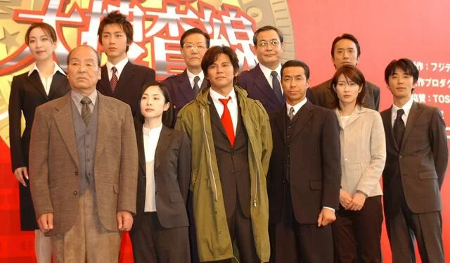

Recently, after watching the sadly disappointing Copycat Killer (模仿犯), I was on the hunt for a good detective story. Japanese detective novels are nearly legendary in the Sinosphere (it is the dream of many hopeful Chinese writers of detective novels to one day have their work translated and published in Japanese magazines or anthologies), so I thought I would see what the Jdrama world could offer. A bit of research led to the discovery of the 1997 Fuji TV produced “Bayside Shakedown (踊る大捜査線)”, or, in Chinese, commonly 大搜查線. Although I went on the hunt with the intention of finding a detective piece, what I found was an obviously landmark work in the police procedural drama genre. Many of the common tropes of later Japanese police procedurals were clearly established here. The link for the show’s Mydramalist entry is here and the Douban entry is here.
The main character of Bayside Shakedown is Aoshima, played by the handsome Oda Yuji, a former top salesman at a computer company who became disillusioned with the pursuit of corporate KPIs and left to join the police force, beginning as a lowly beat cop manning the ubiqutious koban (neighborhood police booths), working his way up to joining the ranks of detectives at a jurisdictional police department, the fictional Wangan Police Department (after the Wangan region of Tokyo Bay), which is the point where we meet our man and begin to follow Aoshima and his colleagues over 11 episodes.
Aoshima is the typical red-blooded rookie who wants to arrest criminals and do it in style (I guess his years in the koban didn’t erase those aspirations). However he arrives in a mildly Kafkaesque atmosphere where the detective section chief is more interested in sneaking out for a round of golf during the day than chasing crooks, and where he finds that taking a patrol car would require completion of a rental form as well as the written approval of the chief and his section chief. Emergency usage requires the additional completion of an emergency use form. After getting report of an office building murder in the district, Aoshima is sent by a disturbingly nonchalant chief to check it out. Upon arrival, however, he is completely stymied by the “career officers” of the (Tokyo) Metropolitan Police Department, who seem to operate at a higher level of both authority and boorish arrogance than the lowly “jurisdictional” officers. In the process he is introduced to Muroi, a career officer on the fast track to promotion who believes in breaking down the bureaucratic walls that divive the jurisdictional and career forces, much to the dismay and outright anger of his colleagues, tempered only by his intense competence.
The contrast between Muroi and Aoshima, and their developing bromance, is one of the main themes of the drama. Aohima uses unconventional methods to do what he percieves to be the right thing, often relying on his former charisma and negotiation skills he honed as a salesman, often to comedic effect. Muroi plays the archtypical “straight cop”, his face permanatly twisted into a frown, who is convinced of the imperative to only effect change from within the system. The writers had the subtly to treat the situation realistically, and only a combination of Aoshima’s outside the lines methods and Muroi’s by-the-book techniques can make progress on the heavier cases that come as the plot advances from case to case. Indeed, neither character can escape the consequences of their actions, and the drama presents the conflict between duty and personal obligation well, resulting in a meaningful finale and with real stakes at play for both characters.
The supporting cast is in general, sympathetic, and the acting is always better than average, avoiding the overly “soapy” feel of other drams of the era. Sumire is a competent, calm female detective whose quiet pride in work well done, even for “insignificant” cases, is a good foil for Aoshima’s enthuasiasm. Waku, the senior detective on the verge of retirement is the old hand and is played with the talent of an experienced master. Although filmed and set in the late 1990s, the female characters are handled well, and I did not get the uncomfortable feeling of male writers writing ideal female characters to the detriment of believability or respect. One of the early “victims”, Yukino, initally seems to be veering into the common bedridden woman trope, which is skilfully changed as she becomes a strong secondary character as the show progresses.
The drama has a good balance between seriousness and comedy, and the comedy is never too over-the-top. The situational comedy (Muroi coming to pick up the unsuspecting Aoshima in a helicopter is particularly funny). The general vibe of the show moves on a gradient from more comedic to more emotional as the show progresses. The finale, where a colleague’s life hangs in the balance after a shooting by an armed and on-the-run suspect, is handled with an appropriate amount of gravitas. There is a scene in which the typically bumbling senior chiefs of the Wangan department unlock the weapons locker to arm the cast, which well conveys the depth of their concern and is part of the carthartic end of the series. I got goosebumps.
If one is willing to accept the fuzzy, low-res 1997 quality, one will find plenty of things to like in this surprisingly touching police procedural. If I must think of a shortcoming, it is the limited character development. While Aoshima and Muroi do experience some changes over the course of the drama, it is limited mostly to development of interpersonal relationships, and less focused on internal changes to the characters.
I highly reccomend this show.